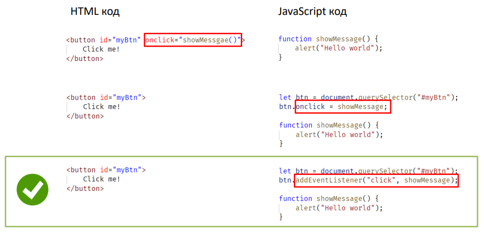

Тема 16. Події (Events)
- Вступ до подій
- Основні події
- Встановлення обробників події
- Ключове слово this в обробнику події
- Об'єкт події
- Події DOMContentLoaded та load
- Події миші
- Події клавіатури
- Фази проходу події
- Реєстрація обробника події на різних фазах
- Скасування поширення події та скасування дії за умовчанням
Подія
Подія – це сигнал, який повідомляє про настання певного стану деякого об'єкта.
Наприклад:
- кнопка натиснута
- курсор увійшов до області елемента
- на клавіатурі натиснута клавіша
Обробник події – функція, яка запускається у разі виникнення події.

Основні події
- click
натискання лівої клавіші миші
- contextmenu
натискання правої клавіші миші
- keydown
клавіша на клавіатурі затиснута
- keyup
клавішу на клавіатурі відпущено
- submit
користувач надіслав форму (натиснув
кнопку submit для form)
- mouseout
курсор вийшов за межі елемента
- mouseover
курсор увійшов у область елемента
- mousedown
затиснута клавіша миші
- mouseup
відпущена клавіша миші
- mousemove
курсор переміщається елементом
Перелік подій
https://developer.mozilla.org/ru/docs/Web/Events
Встановлення обробників

Встановлення обробників
- Обробник може бути встановлений за допомогою атрибута HTML розмітки. Це один із
способів встановлення обробників, яких слід уникати, оскільки у такому випадку
відбувається змішування логіки інтерфейсу (HTML) та бізнес-логіки (JavaScript). Слід завжди
прагнути такої структури коду, щоб розмітка відокремлювалася від сценаріїв. Такий код
легше супроводжувати та розширювати.
- Щоб встановити обробник події через JavaScript код, необхідно визначити функцію та
додати її як значення для властивості з ім'ям події, яку необхідно обробити. Даний підхід має кілька
недоліків, один з них – на одну подію одного елемента можна
додати лише один обробник. При додаванні другого оброблювача, перший обробник
видаляється.
- Найоптимальнішим способом встановлення обробника події є метод addEventListener
Встановлення обробників
addEventListener (event, handler, options)
- event – ім'я події, без приставки on (click, mousedown тощо)
- handler – функція, яка встановлюється як обробник.
- options – додаткові параметри
У такий спосіб можна додати кілька обробників на одну подію того самого елемента
сторінки.
Щоб видалити обробник, який був встановлений через addEventListener, потрібно
використовувати метод removeEventListener
Встановлення обробників
Метод removeEventListener у JavaScript використовується для видалення обробника подій, який був раніше доданий
за допомогою addEventListener. Це важливо з кількох причин:
- Якщо обробник події залишається привʼязаним до елемента, який вже не використовується або видалений з DOM,
це може призвести до витоку памʼяті:
- Оскільки браузер не може "прибрати" цей елемент зі своєї памʼяті, поки існує посилання через
обробник;
- Особливо актуально для SPA (single-page applications), де сторінка не перезавантажується, і
"сміття" накопичується
- Уникнення повторного спрацювання одного й того ж обробника. Якщо ви декілька разів викликаєте
addEventListener, не видаляючи старі обробники, то один і той самий обробник може спрацьовувати кілька разів
— це може викликати баги або неочікувану поведінку.
Встановлення обробників
Поради по роботі з removeEventListener
- Якщо при додаванні обробника події було використано додаткові опції, то при видаленні обробника необхідно
вказати ці ж опції, щоб вказати, який саме обробник потрібно видалити.
- Використання removeEventListener() є важливим для оптимізації продуктивності вебзастосунків. Видалення
непотрібних обробників подій допомагає уникнути витоків пам'яті, особливо в односторінкових додатках, де
елементи DOM можуть динамічно додаватися та видалятися. Тому регулярно переглядайте свій код на предмет
неактивних слухачів подій та видаляйте їх.
- Коли ви використовуєте removeEventListener() для видалення обробника події з елемента, переконайтеся, що цей
елемент все ще існує в DOM. Якщо елемент було видалено, спроби видалити обробник події з нього будуть
марними. Також, якщо ви працюєте з динамічно генерованими елементами, забезпечте наявність механізму для
відстеження та видалення обробників подій перед видаленням цих елементів з DOM.
Ключове слово this в обробнику події
Якщо в обробнику використовувати ключове слово this, можна отримати доступ до
об'єкта, який ініціював подію.
Наприклад, якщо в обробнику кнопки на подію click
використовувати this, можна отримати доступ до самої кнопки, по якій виконали клік, а
також отримати значення властивостей цієї кнопки.
Це зручно використовувати тоді, коли
той самий обробник використовується для різних елементів на сторінці.
Підсумки
Подія – основний спосіб реагувати на дії користувача та виконувати код. Для обробки події потрібно
встановити обробник події у вигляді JavaScript функції.
Обробник можна встановити через:
- атрибут on+назва_події в розмітці
- властивості on+ім'я_події у JavaScript коді
- метод addEventListener
Метод addEventListener дозволяє встановити кілька обробників на одну подію та підтримує
маршрутизацію подій.
Приклади в директорії js/16-events/examples/events-1
Локальні змінні/Зовнішні змінні
- Змінна, яка оголошена в функції доступна лише в тілі цієї функції.
- Функція може використовувати зовнішні змінні.
- Функція має повний доступ до зовнішньої змінної. Вона теж може її змінювати.
- Зовнішня змінна використовується тоді, коли немає локальної.
- Якщо всередині функції є змінна з таким самим ім’ям, то вона перекриває зовнішню.
Значення, що повертається
Функція може повертати значення. Виклик функції можна присвоїти змінній.
значення ← getMessage();
Для визначення значення, що повертається, використовується ключове слово return в тілі функції.
function getMessage() {
return 'Some awesome text message!';
}
let value = getMessage();
Найменування функцій
- Функція - це дія, тому для імені краще обирати дієслово.
- Одна функція має виконувати одну дію. Функція повинна робити саме те, що написано в її імені, не більше.
- Добре ім’я функції часто змінює коментар у коді.
- showReport()
- getSegmentLength()
- createButton()
- deleteDuplicates()
- checkPermission()
- "get…" – повертають значення,
- "calc…" – щось обчислюють,
- "create…" – щось створюють,
- "check…" – щось перевіряють і повертають булеве значення.
Приклади

Контрольні питання
- Що така подія?
- Назвіть події, пов'язані з клавіатурою.
- Назвіть події, пов'язані з рухом курсора.
- Як встановити обробник через розмітку?
- Які способи встановлення обробників через JavaScript код ви знаєте?
- У чому перевага використання addEventListener перед іншими варіантами?